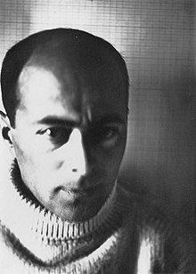

Overview
His work was often highly abstract and theoretical, his work was able to speak to the prevailing political discourse of Russia and then the Soviet Union. He used color and basic shapes to make political statements. He believed that art and life could mesh and that art could deeply affect life. He utilized a small pallet of primary colors, black and white text, and basic forms to make very powerful political statements. Architecture was one of his most favored form of artistic expression, yet he had little success realizing his designs, most of which were close to Utopian and impossible. He was a force of change, deeply influencing modern art, including the De Stijil artists and Bauhaus instructors.
Early Years
At university, he studied free drawing during which he would draw from memory full color illustrations of buildings and landscapes in Vitebsk, as well as other locations that he had visited. These early works bear more resemblance to the work of the Jugendstil artists than with his later style. With the out break of WWI in 1914 he was force to return to Russia. He received his diploma in engineering and architecture from the Riga Technical University in 1916.
Career
By 1920 he had begun devoting himself exclusively to Suprematism. His art was arguably less purely Suprematist because of his frequent use of political symbolism. His Beat the Whites with the Red Wedge (see examples page) for instance was a direct response to the Russian civil war. After suprematism dissolved, he returned to Germany. While in Germany he worked as a graphic designer for a for various magazines and journals.